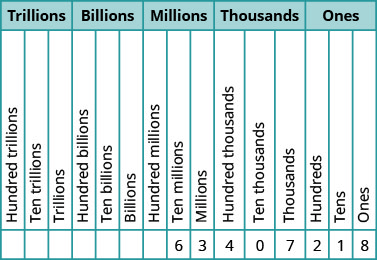
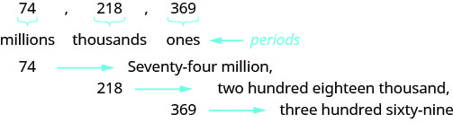
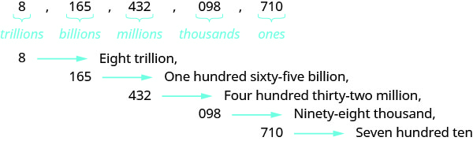
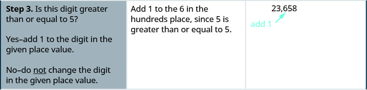
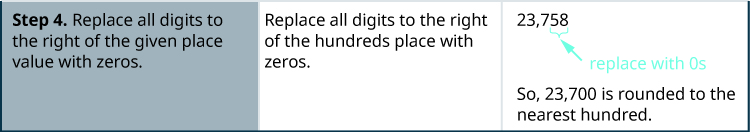
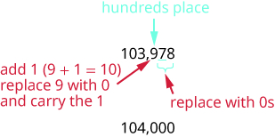
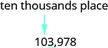

শূন্যসহ স্বাভাবিক সংখ্যায় স্থানীয় মান ব্যবহার করি
বীজগণিতে ব্যবহৃত সবচেয়ে প্রাথমিক সংখ্যাগুলো হলো চারপাশের জিনিস গুনতে আমরা যে সংখ্যাগুলো ব্যবহার করি: 1, 2, 3, 4 ইত্যাদি। এগুলো হলো গণনার সংখ্যাগুলো। গণনার সংখ্যাগুলোকে স্বাভাবিক সংখ্যাও বলা হয়। স্বাভাবিক সংখ্যার সঙ্গে শূন্য অন্তর্ভুক্ত করলে আমরা পাই শূন্যসহ স্বাভাবিক সংখ্যাগুলোর সেট।
গণনার সংখ্যা: 1, 2, 3, …
শূন্যসহ স্বাভাবিক সংখ্যা: 0, 1, 2, 3, …
‘…’ চিহ্নটিকে ত্রিবিন্দু বলা হয়। এর অর্থ ‘ইত্যাদি’—অর্থাৎ ধারাটি এভাবেই শেষ না হয়ে চলতে থাকে।
গণনার সংখ্যা ও শূন্যসহ স্বাভাবিক সংখ্যাগুলোকে একটি সংখ্যারেখায় দেখানো যায় (দেখো সংশ্লিষ্ট চিত্র)।
চিত্রের বাংলা পাঠ: চিত্রের নিচে দুই প্রান্তে তীরচিহ্নসহ একটি অনুভূমিক সংখ্যারেখায় 0 থেকে 6 পর্যন্ত সংখ্যা আছে। তার ওপরে 3 থেকে 0-এর দিকে বামমুখী একটি তীর আছে; ইংরেজি smaller লেবেলটির অর্থ ‘ছোট হয়’। আরও ওপরে 3 থেকে 6-এর দিকে ডানমুখী একটি তীর আছে; larger লেবেলটির অর্থ ‘বড় হয়’।
মূল ইংরেজি চিত্র দেখো

আমাদের সংখ্যাপদ্ধতি একটি স্থানীয় মানভিত্তিক পদ্ধতি: একটি সংখ্যার মধ্যে অঙ্কটি কোথায় আছে, তার ওপর অঙ্কটির মান নির্ভর করে। সংশ্লিষ্ট চিত্রে দেখানো হয়েছে বিভিন্ন স্থানের মান। এখানে পরপর তিনটি স্থান নিয়ে একটি দল করা হয়েছে; ইংরেজিতে এই দলকে period বলে। দলগুলো হলো একক, হাজার, মিলিয়ন, বিলিয়ন, ট্রিলিয়ন ইত্যাদি। সংখ্যা লেখার সময় কমা দিয়ে দলগুলো আলাদা করা হয়।
চিত্রের বাংলা পাঠ: আন্তর্জাতিক তিন-অঙ্কের দলভিত্তিক স্থানীয় মানের ছকে 5,278,194 বসানো আছে। ওপরের শিরোনাম Place Value, অর্থাৎ স্থানীয় মান। দলগুলো বাম থেকে ট্রিলিয়ন, বিলিয়ন, মিলিয়ন, হাজার ও একক। ট্রিলিয়ন দলে শত ট্রিলিয়ন, দশ ট্রিলিয়ন ও ট্রিলিয়ন; বিলিয়ন দলে শত বিলিয়ন, দশ বিলিয়ন ও বিলিয়ন; মিলিয়ন দলে শত মিলিয়ন, দশ মিলিয়ন ও মিলিয়ন; হাজার দলে শত হাজার, দশ হাজার ও হাজার; একক দলে শতক, দশক ও একক—প্রতিটি দলে তিনটি ঘর। ঘরের নামগুলো নিচ থেকে ওপরে লেখা। পূরণ করা ঘরগুলো হলো: মিলিয়ন 5; শত হাজার 2; দশ হাজার 7; হাজার 8; শতক 1; দশক 9; একক 4। অর্থাৎ পাঁচ মিলিয়ন, দুইশত আটাত্তর হাজার, একশত চুরানব্বই।
মূল ইংরেজি চিত্র দেখো
![আন্তর্জাতিক তিন-অঙ্কের দলভিত্তিক স্থানীয় মানের ছকে 5,278,194 বসানো আছে। ওপরের শিরোনাম Place Value, অর্থাৎ স্থানীয় মান। দলগুলো বাম থেকে ট্রিলিয়ন, বিলিয়ন, মিলিয়ন, হাজার ও একক। ট্রিলিয়ন দলে শত ট্রিলিয়ন, দশ ট্রিলিয়ন ও ট্রিলিয়ন; বিলিয়ন দলে শত বিলিয়ন, দশ বিলিয়ন ও বিলিয়ন; মিলিয়ন দলে শত মিলিয়ন, দশ মিলিয়ন ও মিলিয়ন; হাজার দলে শত হাজার, দশ হাজার ও হাজার; একক দলে শতক, দশক ও একক—প্রতিটি দলে তিনটি ঘর। ঘরের নামগুলো নিচ থেকে ওপরে লেখা। পূরণ করা ঘরগুলো হলো: মিলিয়ন 5; শত হাজার 2; দশ হাজার 7; হাজার 8; শতক 1; দশক 9; একক 4। অর্থাৎ পাঁচ মিলিয়ন, দুইশত আটাত্তর হাজার, একশত চুরানব্বই।](assets/CNX_ElemAlg_Figure_01_01_002_new.jpg)
মূল বইয়ের উদাহরণ
63,407,218 সংখ্যাটিতে নিচের প্রতিটি অঙ্ক কোন স্থানে আছে, নির্ণয় করো:
- ⓐ 7
- ⓑ 0
- ⓒ 1
- ⓓ 6
- ⓔ 3
সমাধান
সংখ্যাটি স্থানীয় মানের ছকে বসাও:
চিত্রের বাংলা পাঠ: স্থানীয় মানের ছকে 63,407,218 বসানো আছে। ওপরের শিরোনাম Place Value, অর্থাৎ স্থানীয় মান। বাম থেকে ট্রিলিয়ন, বিলিয়ন, মিলিয়ন, হাজার ও একক দল; প্রতি দলে শত, দশ ও একের তিনটি ঘর, যাদের নাম নিচ থেকে ওপরে লেখা। ট্রিলিয়ন ও বিলিয়ন দলের ঘরগুলো ফাঁকা। পূরণ করা ঘরগুলো: দশ মিলিয়ন 6; মিলিয়ন 3; শত হাজার 4; দশ হাজার 0; হাজার 7; শতক 2; দশক 1; একক 8। অর্থাৎ তেষট্টি মিলিয়ন, চারশত সাত হাজার, দুইশত আঠারো।
মূল ইংরেজি চিত্র দেখো

ⓐ 7 হাজারের ঘরে আছে।
ⓑ 0 দশ হাজারের ঘরে আছে।
ⓒ 1 দশকের ঘরে আছে।
ⓓ 6 দশ মিলিয়নের ঘরে আছে।
ⓔ 3 মিলিয়নের ঘরে আছে।
ⓑ 0 দশ হাজারের ঘরে আছে।
ⓒ 1 দশকের ঘরে আছে।
ⓓ 6 দশ মিলিয়নের ঘরে আছে।
ⓔ 3 মিলিয়নের ঘরে আছে।
চেক লেখার সময় অঙ্কের পাশাপাশি কথায়ও সংখ্যা লিখতে হয়। এখানে মূল বইয়ের আন্তর্জাতিক তিন-অঙ্কের দলভিত্তিক রীতি অনুসরণ করা হচ্ছে। প্রথমে প্রতিটি দলের সংখ্যা কথায় লেখো, তারপর দলের নাম লেখো। ইংরেজিতে দলের নামের শেষে বহুবচনের s বসে না। বাম দিকের সবচেয়ে বড় মানের দল থেকে শুরু করো। একক দলের নাম লেখা হয় না। কমা দিয়ে দল আলাদা করা হয়; তাই অঙ্কে লেখা সংখ্যায় যেখানে কমা আছে, কথায় লেখার সময়ও সেখানে কমা দাও (দেখো সংশ্লিষ্ট চিত্র)। 74,218,369 লেখা হয়: চুয়াত্তর মিলিয়ন, দুইশত আঠারো হাজার, তিনশত ঊনসত্তর।
চিত্রের বাংলা পাঠ: ওপরের সারিতে কমা দিয়ে আলাদা করে 74, 218 ও 369 লেখা। প্রতিটি দলের নিচে বন্ধনী: 74-এর নিচে millions অর্থাৎ মিলিয়ন, 218-এর নিচে thousands অর্থাৎ হাজার, 369-এর নিচে ones অর্থাৎ একক। পাশে periods লেখা তীর এই দলগুলোর নাম নির্দেশ করে। পরের সারিগুলোতে ডানমুখী তীর দিয়ে দেখানো: 74—চুয়াত্তর মিলিয়ন; 218—দুইশত আঠারো হাজার; 369—তিনশত ঊনসত্তর। প্রথম দুই দলের কথার শেষে কমা আছে। মূল ছবির শব্দগুলো ইংরেজিতে লেখা।
মূল ইংরেজি চিত্র দেখো

মূল বইয়ের উদাহরণ
8,165,432,098,710 সংখ্যাটি কথায় লেখো।
সমাধান
প্রতিটি দলের সংখ্যা কথায় লেখো, তারপর দলের নাম লেখো।
চিত্রের বাংলা পাঠ: 8, 165, 432, 098 ও 710 একটি সারিতে কমা দিয়ে আলাদা করা আছে। নিচের বন্ধনীগুলো যথাক্রমে ট্রিলিয়ন, বিলিয়ন, মিলিয়ন, হাজার ও একক দল নির্দেশ করে। পরের সারিগুলোতে সংখ্যা থেকে ডানমুখী তীর দিয়ে কথায় লেখা রূপ দেখানো হয়েছে: 8—আট ট্রিলিয়ন; 165—একশত পঁয়ষট্টি বিলিয়ন; 432—চারশত বত্রিশ মিলিয়ন; 098—আটানব্বই হাজার; 710—সাতশত দশ। শেষ দল ছাড়া বাকিগুলোর কথার পরে কমা আছে। মূল ছবির শব্দগুলো ইংরেজিতে।
মূল ইংরেজি চিত্র দেখো

দলগুলো আলাদা করতে কমা বসাও।
সুতরাং, কথায় লেখা হয়: আট ট্রিলিয়ন, একশত পঁয়ষট্টি বিলিয়ন, চারশত বত্রিশ মিলিয়ন, আটানব্বই হাজার, সাতশত দশ।
এবার উল্টো কাজ করব: কথায় লেখা সংখ্যা থেকে অঙ্কে লিখব। প্রথমে দল বোঝায় এমন শব্দগুলো খুঁজে বের করো। দরকারি প্রতিটি দলের জন্য তিনটি ঘর এঁকে, সেই ঘরগুলোতে অঙ্ক বসালে সুবিধা হয়। দলগুলো কমা দিয়ে আলাদা করো।
মূল বইয়ের উদাহরণ
কথায় লেখা নয় বিলিয়ন, দুইশত ছেচল্লিশ মিলিয়ন, তিয়াত্তর হাজার, একশত ঊননব্বই সংখ্যাটি অঙ্কে লেখো।
সমাধান
দল বোঝায় এমন শব্দগুলো চিহ্নিত করো।
বাম দিকের প্রথম দল ছাড়া প্রতিটি দলে তিনটি অঙ্কের স্থান থাকতে হবে। সেই স্থানগুলো দেখাতে তিনটি খালি ঘর আঁকো। দলগুলো কমা দিয়ে আলাদা করো।
তারপর প্রতিটি দলে অঙ্কগুলো বসাও।

সংখ্যাটি হলো 9,246,073,189।
বাম দিকের প্রথম দল ছাড়া প্রতিটি দলে তিনটি অঙ্কের স্থান থাকতে হবে। সেই স্থানগুলো দেখাতে তিনটি খালি ঘর আঁকো। দলগুলো কমা দিয়ে আলাদা করো।
তারপর প্রতিটি দলে অঙ্কগুলো বসাও।
চিত্রের বাংলা পাঠ: ছবির ওপরের অংশে ইংরেজিতে নয় বিলিয়ন এবং দুইশত ছেচল্লিশ মিলিয়ন লেখা; প্রতিটির শেষে কমা আছে। billion ও million শব্দের নিচে দাগ এবং প্রতিটি কথার দলের নিচে বন্ধনী আছে। নিচের অংশে তিয়াত্তর হাজার, তারপর একশত ঊননব্বই লেখা। thousand শব্দের নিচে দাগ এবং দুই দলের নিচে আলাদা বন্ধনী আছে। এই চিহ্নগুলো অঙ্কে লেখার সময় দলগুলো আলাদা করতে সাহায্য করে।
মূল ইংরেজি চিত্র দেখো
সংখ্যাটি হলো 9,246,073,189।
2013 সালে যুক্তরাষ্ট্রের আদমশুমারি সংস্থা নিউইয়র্ক অঙ্গরাজ্যের জনসংখ্যা 19,651,127 বলে অনুমান করেছিল। আমরা বলতে পারি, তখন নিউইয়র্কের জনসংখ্যা আনুমানিক 20 মিলিয়ন ছিল। অনেক ক্ষেত্রে একেবারে নির্ভুল মানের বদলে কাছাকাছি একটি মান জানলেই চলে।
কোনো সংখ্যাকে নির্দিষ্ট স্থানের ভিত্তিতে কাছাকাছি একটি মান দিয়ে প্রকাশ করার প্রক্রিয়াকে বলে আসন্ন মান নির্ণয়। কতটা নির্ভুলতা দরকার, তার ওপর নির্ভর করে কোন স্থান পর্যন্ত আসন্ন মান নিতে হবে। নিউইয়র্কের জনসংখ্যা প্রায় 20 মিলিয়ন বলার অর্থ হলো মিলিয়নের স্থান পর্যন্ত আসন্ন মান নেওয়া হয়েছে।
মূল বইয়ের উদাহরণ
শূন্যসহ স্বাভাবিক সংখ্যার আসন্ন মান যেভাবে নির্ণয় করি
23,658 সংখ্যাটির নিকটতম শতক পর্যন্ত আসন্ন মান নির্ণয় করো।
সমাধান
চিত্রের বাংলা পাঠ: চার ধাপের তিন-কলামের ছকের প্রথম সারি। বাঁয়ের কলামে ধাপের নাম, মাঝের কলামে নির্দেশ এবং ডানের কলামে সংখ্যাটি দেখানো। ধাপ 1: নির্দিষ্ট স্থানটি তীর দিয়ে চিহ্নিত করো। মূল ছবিতে বলা হয়েছে, বাঁয়ের অঙ্কগুলো বদলাবে না; তবে হাতে রাখার ক্ষেত্রে এই সাধারণ দাবির সীমাবদ্ধতা আছে, যা সংস্করণের সংশোধন নোটে বলা হয়েছে। 23,658-এর শতকের অঙ্ক 6-এর দিকে তীর এবং hundreds place অর্থাৎ শতকের স্থান লেবেল আছে।
মূল ইংরেজি চিত্র দেখো
চিত্রের বাংলা পাঠ: ছকের দ্বিতীয় সারি। ধাপ 2: নির্দিষ্ট স্থানের ঠিক ডান পাশের অঙ্কটির নিচে দাগ দাও। 23,658-এ শতকের অঙ্ক 6-এর দিকে তীর আছে এবং তার ডান পাশের অঙ্ক 5-এর নিচে দাগ দেওয়া হয়েছে।
মূল ইংরেজি চিত্র দেখো

চিত্রের বাংলা পাঠ: ছকের তৃতীয় সারি। ধাপ 3: ডান পাশের অঙ্কটি 5 বা তার চেয়ে বড় কি না দেখো। হলে নির্দিষ্ট স্থানের অঙ্কের সঙ্গে 1 যোগ করো, না হলে সেটি বদলাবে না। এখানে 5 থাকায় শতকের 6-এর সঙ্গে 1 যোগ করতে হবে। ছবিতে 23,658-এর 6-এর দিকে ‘add 1’ লেখা একটি তীর আছে; এই সারিতে শূন্য বসানোর বন্ধনী নেই।
মূল ইংরেজি চিত্র দেখো

চিত্রের বাংলা পাঠ: ছকের চতুর্থ সারি। ধাপ 4: শতকের ডান পাশের সব অঙ্কের জায়গায় 0 বসাও। ছবিতে আগের ধাপে শতকের 6-এর সঙ্গে 1 যোগ করার পরের মধ্যবর্তী সংখ্যা 23,758 দেখানো হয়েছে। 5 ও 8-এর নিচের বন্ধনীতে তাদের জায়গায় 0 বসাতে বলা হয়েছে; শেষে 23,658-এর নিকটতম শতক পর্যন্ত আসন্ন মান 23,700 হয়।
মূল ইংরেজি চিত্র দেখো

মূল বইয়ের উদাহরণ
নিচের সংখ্যাটিকে তালিকায় দেওয়া প্রতিটি স্থান পর্যন্ত আসন্ন মানে লেখো: ।
- ⓐ শতক
- ⓑ হাজার
- ⓒ দশ হাজার
সমাধান
ⓐ
| 103,978-এ শতকের স্থানটি চিহ্নিত করো। | চিত্রের বাংলা পাঠ: 103,978 সংখ্যাটির 9-এর দিকে তীর দেখিয়ে শতকের স্থান চিহ্নিত করা হয়েছে। মূল ইংরেজি চিত্র দেখো |
| শতকের ঠিক ডান পাশের অঙ্কটির নিচে দাগ দাও। | চিত্রের বাংলা পাঠ: 103,978-এ তীর দিয়ে শতকের অঙ্ক 9 চিহ্নিত করা হয়েছে; তার ডান পাশের অঙ্ক 7-এর নিচে দাগ দেওয়া আছে। মূল ইংরেজি চিত্র দেখো |
| 7 হলো 5-এর চেয়ে বড়, তাই 9-এর সঙ্গে 1 যোগ করো। শতকের ডান পাশের অঙ্কগুলোর জায়গায় শূন্য বসাও। | চিত্রের বাংলা পাঠ: 103,978-কে নিকটতম শতক পর্যন্ত নেওয়া হচ্ছে। দশকের 7 অন্তত 5 হওয়ায় শতকের 9-এর সঙ্গে 1 যোগ করা হয়। 9+1=10: শতকের ঘরে 0 বসে, আর হাতে থাকা 1 হাজারের 3-এর সঙ্গে যোগ হয়ে 4 হয়। শেষ দুই অঙ্কের জায়গায় 0 বসিয়ে পাওয়া যায় 104,000। এটি শতক পর্যন্ত আসন্ন মানের ধাপ, হাজার পর্যন্ত ধাপ নয়। মূল ইংরেজি চিত্র দেখো |
| সুতরাং, 103,978-এর নিকটতম শতক পর্যন্ত আসন্ন মান 104,000। |
ⓑ
| হাজারের স্থান চিহ্নিত করো এবং তার ঠিক ডান পাশের অঙ্কটির নিচে দাগ দাও। | চিত্রের বাংলা পাঠ: 103,978-এ হাজারের অঙ্ক 3-এর দিকে তীর আছে; ডান পাশের অঙ্ক 9-এর নিচে দাগ আছে। মূল ইংরেজি চিত্র দেখো |
| 9 হলো 5-এর চেয়ে বড়, তাই 3-এর সঙ্গে 1 যোগ করো। হাজারের ডান পাশের সব অঙ্কের জায়গায় শূন্য বসাও। | চিত্রের বাংলা পাঠ: 103,978-এর নিকটতম হাজার পর্যন্ত আসন্ন মান: ডান পাশের 9 অন্তত 5 হওয়ায় হাজারের 3 বদলে 4 হয়। 978-এর জায়গায় 000 বসে। ফল 104,000। মূল ইংরেজি চিত্র দেখো |
| সুতরাং, 103,978-এর নিকটতম হাজার পর্যন্ত আসন্ন মান 104,000। |
ⓒ
| দশ হাজারের স্থান চিহ্নিত করো এবং তার ঠিক ডান পাশের অঙ্কটির নিচে দাগ দাও। | চিত্রের বাংলা পাঠ: 103,978-এ দশ হাজারের অঙ্ক 0-এর দিকে হালকা নীল তীর আছে; লেবেলটি দশ হাজারের স্থান বোঝায়। ডান পাশের হাজারের অঙ্ক 3-এর নিচে দাগ আছে। মূল ইংরেজি চিত্র দেখো |
| 3 হলো 5-এর চেয়ে ছোট, তাই 0 অপরিবর্তিত রাখি। এরপর তার ডান পাশের সব অঙ্কের জায়গায় শূন্য বসাই। | চিত্রের বাংলা পাঠ: সাদা পটভূমিতে 100,000 লেখা আছে। মূল ইংরেজি চিত্র দেখো |
| সুতরাং, 103,978-এর নিকটতম দশ হাজার পর্যন্ত আসন্ন মান 100,000। |